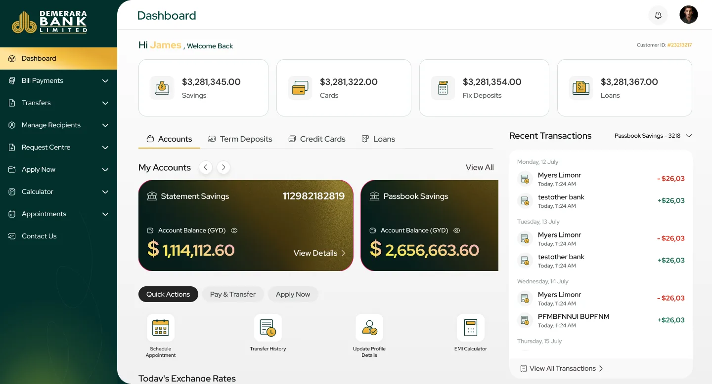

Simple tasks still meant a trip to the branch
Online banking showed balances, but many everyday services still needed a paper form, a phone call or a queue. Fees appeared at the last moment, and requests disappeared into silence.
Demerara Bank
Demerara Bank's customers still had to queue at a branch or call support for many routine tasks. I redesigned online banking so people can move money, request services, plan loans and book appointments in a few clear steps, and always know what happens next.

Customers finish transfers, bill payments and account changes instead of giving up halfway.
Clear menus and visible statuses mean far fewer “where is my request?” calls.
Secure sign-in, upfront costs and a clear, modern interface make customers comfortable banking online.
Demerara Bank serves personal and business customers across Guyana with accounts, loans, cards, transfers and payments. More and more of them want to do their banking from a phone, quickly and safely, without visiting a branch.
The old online banking felt dated and confusing. Many services still needed paper forms, fees appeared at the last step, and once a request was sent, customers couldn't see what was happening. The redesign had to make routine tasks simple without loosening any of the bank's security or compliance.
This is the story of how everyday banking at Demerara Bank moved from branch queues and phone calls to a few calm taps, for shop owners, young professionals and retirees alike. I designed the end-to-end experience: user flows, wireframes, dashboards, responsive layouts and the design system.
Online banking showed balances, but many everyday services still needed a paper form, a phone call or a queue. Fees appeared at the last moment, and requests disappeared into silence.
Customers avoided going digital because they couldn't see what would happen next, or what it would cost.
Transfers, cards, service requests, loan planning and appointments now live in one place, with the cost shown upfront and a clear status for every request.
Demerara Bank serves personal and business customers across Guyana with accounts, cards, loans, transfers and payments. Many of those services were still built around branch visits, phone calls and paper forms, while customers increasingly expected to handle them from their phone.
The old online banking was organised like the bank's office building: to do one simple thing, you had to know which department to visit. Customers didn't want a building directory. They wanted a front desk.
Check balances, pay bills, send money and manage cards, quickly and often on the go.
Make larger transfers, get statements and ask for services that used to need a branch visit.
Official statements, cheque books, bank drafts and appointments all needed an online version.
Every screen had to feel safe and meet banking rules, without adding extra hoops to jump through.
Anjali runs a small retail shop. Every hour she spends at the bank is an hour her shop is closed. Here's what getting one official bank statement used to look like for her.
Without it, they won't extend her credit for the new season's stock.
The portal shows her balances, but there's no way to request a statement.
Then she fills in a paper form at the counter.
It's charged to her personal account, not the business one.
After a wait on hold, she learns the request is “being processed”.
Four days and two closed afternoons for one piece of paper.
An illustrative scenario, pieced together from what customers and branch staff described in research.
The redesign had to work for very different customers: a busy business owner, a mobile-first young professional, and a cautious retiree.
Small business owner
Retail store · personal & business accounts
I shouldn't have to close my shop for an hour just to get a bank statement.
Young professional
Salaried employee · first credit card
If I can order food in thirty seconds, why does a transfer take ten minutes?
Retired teacher
Pension & savings account holder
I'll use it online if I'm sure I can't press the wrong button.
Anjali is the primary persona; Marcus and Shanta are secondary.
Anjali needed certainty at every step: what's happening, what it costs, and what comes next. Marcus needed speed, and Shanta needed reassurance. Clear, predictable screens served all three.
Moving money, paying bills or asking for a statement should take minutes. Instead, the old experience was dated, confusing, and full of moments where customers weren't sure it had worked.
When people can't see what will happen next, they don't press the button. They pick up the phone, or they drive to the branch.
How might we make everyday banking feel as simple and safe online as it does at the counter, for both personal and business customers?
I wanted to know which tasks customers try to do online, where they give up, and which tasks still push them to a branch or the phone.
The same moments of doubt came up again and again. Paraphrased from the interviews:
“The menus are named after bank departments, not the things I want to do.”
“For a statement or a draft, I still have to fill in a paper form.”
“Once I've submitted a request, I have no idea what's happening.”
“I only find out about the fee at the very last step.”
“To know if I can afford a loan, I have to go and ask at the branch.”
“Booking an appointment means calling during office hours.”
Customers didn't avoid online banking because features were missing. They avoided it because they couldn't see what would happen next, or what it would cost.
I compared every way customers could already reach the bank. Each one did part of the job, but none made routine banking both fast and reassuring.
| Channel | Good at | What's missing | Verdict |
|---|---|---|---|
| Branch visitsIn person | Every service, with a real person to reassure you. | Convenience. Opening hours, queues and travel. | Inconvenient |
| Old internet bankingWeb portal | Balances and basic transfers. | Easy navigation, and most services you'd ask a branch for. | Outdated |
| Phone supportCall centre | Answering questions and checking on requests. | Actually getting things done, without waiting on hold. | Partial |
| Modern banking appsMarket benchmark | Clean dashboards, instant transfers, self-service. | Not available to these customers, but they set the bar people expect. | Benchmark |
| Demerara Bank redesignThis project | Dashboard, transfers, cards, requests, loan calculator and appointments, all self-service. | No surprises. Costs and statuses are always visible. | Opportunity |
Bring branch-only services online, and make them feel as accountable as talking to a person.
Every decision aimed at the same two things: fewer steps for routine tasks, and no surprises along the way. Here's what we noticed, what we could have done, and what we chose.
We noticed: almost everyone checks their money first, then does one thing. So the home screen opens on savings, cards, deposits and loans, with the most common tasks one tap away.
We noticed: customers describe tasks, not departments. So the menu uses their words: Bill Payments, Transfers, Request Centre, Apply Now, Calculator, Appointments, each opening into smaller tasks.
We noticed: surprise fees at the last step destroyed trust. So request forms show the estimated charge, which account it comes from, and whether there's enough money, before you submit.
We noticed: “Can I afford this loan?” always meant a branch visit. So a loan calculator with simple sliders shows the monthly payment and total cost instantly, and customers arrive at the application already informed.
We noticed: trust comes from knowing what's going on, like a parcel tracker. So pages show their layout while loading instead of going blank, every request carries a clear status, each one has its own detail page, and appointments get a review step before booking.
Banking rules add steps; customers want fewer. The balance was to keep every safety check, but make each one visible and explained, so it felt like care rather than red tape.
The redesigned platform brings accounts, transfers, cards, service requests, loan planning and appointments into one calm, task-focused experience.
Her balances and quick actions are the first thing she sees.
The form shows the charge and which account it comes from before she submits.
A balance check confirms there's enough money to cover it.
The request appears in her list with a clear status.
No phone call, no queue, and the shop never closed.
Savings, cards, fixed deposits and loans sit at the top. Account cards, quick actions and recent transactions follow. While data loads, the page shows its outline instead of going blank, so it never feels broken.
FixesA dated home screen that was hard to find your way around
Transfers, including to other countries, use a clear layout for who you're paying and the payment details. Card pages show limits, due dates and the full transaction history.
Fixes“How sure am I that this went to the right person?”
Official statements, bank drafts and other requests are made online, with the charge shown upfront. Then they're tracked in one list, each with a clear status and its own detail page.
Fixes“Once I've submitted a request, I have no idea what's happening.”
The loan calculator answers “can I afford this?” instantly. When a visit really is needed, appointments are booked online by type, date and time, with a review step before confirming.
FixesPhone calls for loan questions and appointments
Organising banking around what customers want to do, and never surprising them, changed how often they finished a task, and how often they needed help.
Customers finish transfers, bill payments and account changes far more often, and faster, instead of giving up halfway.
Clear menus, step-by-step flows and visible statuses mean far fewer “where is my request?” calls.
Secure sign-in, upfront costs and a modern, clear interface have made customers far more comfortable banking online.
Remember Anjali? “I shouldn't have to close my shop for an hour just to get a bank statement.” Now she doesn't.
The redesign moved everyday banking, and many branch-only services, into one task-focused experience. Organising it around what customers want to do, rather than how the bank is structured, made routine tasks faster and easier to trust.
Showing costs upfront, visible statuses and review steps did more for confidence than any security badge.
When menus matched what customers wanted to do, they no longer needed to know how the bank works inside.
The biggest wins came from services that used to need a visit, not from the dashboard.